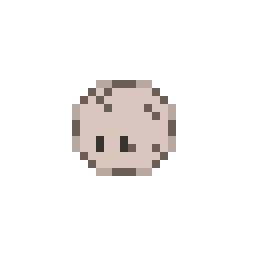
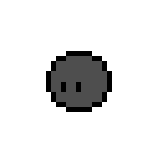
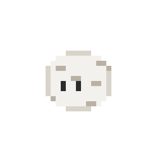
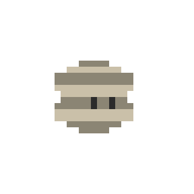
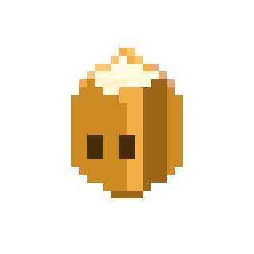
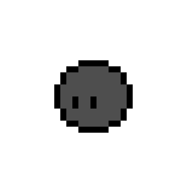

ROCKIE
애완돌
집중 모드
25:00
ROCKIE
화면 위에 사는 나만의 작은 애완돌






PROLOGUE
MENU

조약돌
수정 예정
이름
✎ 이름을 지어주면 애완돌이 기뻐해요 (호감도 +)
성향 요약
아직 알아가는 중이에요
내향적
관찰형
서늘함 선호
질문 진행도
0 / 0
🜨 요즘 부쩍 단단해지고 있어요. 다음 진화까지 조금만 더.
호감도
낯가림
0 / 100
돌보기
· 하루 한 번, 호감도 +3
스킨
· 눌러서 장착/해제
진화 단계마다 새 스킨이 열려요.
???
기본
???
1단계
???
2단계
???
3단계
답변 히스토리
시스템 모니터
애완돌의 활동량은 컴퓨터 상태에 연결돼요.
부하가 높을수록 애완돌이 바쁘게 움직여요.
부하가 높을수록 애완돌이 바쁘게 움직여요.
꿈틀꿈틀 · 활동적
적당한 부하. 돌이 살짝 몸을 뒤척여요.
시스템—
사용자—
대기—
사용—
사용 가능—
전체—
스왑—
사용—
여유—
전체—
전원—
최대 용량—
사이클—
로컬 IP—
업로드—
다운로드—
주간 세션 사용—
5시간 초기화—
주간 초기화—
마지막 확인—
Claude
공식 연동 대기 중
—
Claude 사용량은 아직 표시할 수 없어요.
Anthropic의 공식 연동이 열리기를 기다리는 중이에요.
Anthropic의 공식 연동이 열리기를 기다리는 중이에요.
일반
권한
애완돌 위치
드래그로 애완돌을 잠시동안 원하는 위치에 둘 수 있어요.
애완돌 크기
집중 모드 시간
쪽잠 모드 시간
20분
1
120
Rockie v1 · 나의 애완돌
© 2026 · jeondowon
© 2026 · jeondowon
처음부터 다시 키우기
모든 진행도·성향·호감도·설정이 지워지고 조약돌로 돌아갑니다. 되돌릴
수 없어요.